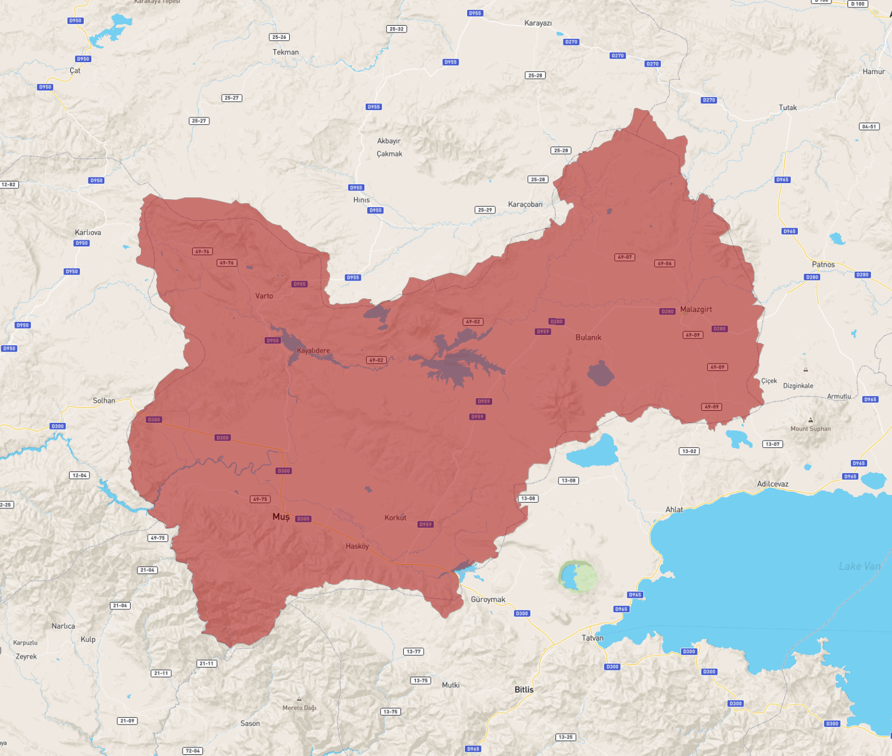

ANA SAYFA

İlk rivayet Asurlulardan kaçarak şehre gelen İbrani kabileleri tarafından şehre Muş adının verildiği yönündedir. Muş ismi İbranice “sulak ve otlak” anlamına gelen “Muşa” sözcüğünden türetilmiştir. Bir diğer rivayet ise şehrin isminin İÖ 12. yüzyılda Yukarı Dicle Vadisi'ne yerleşen Muşkiler'den geldiği yönündedir.